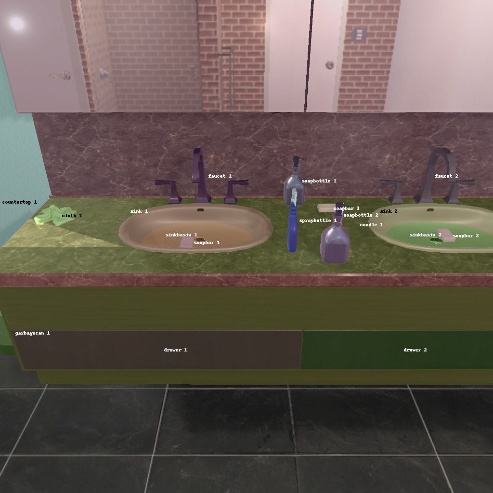
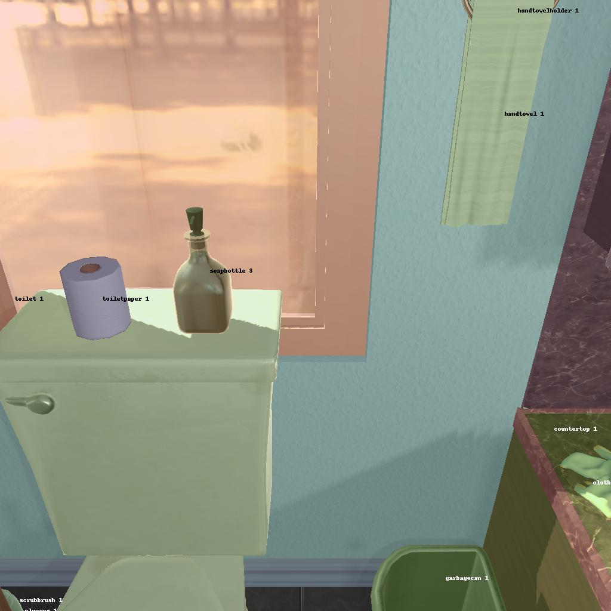

---------------------------------------------------------task: 27---------------------------------------------------------
--------------------------------------------------------------------------------------------------------------------------------------------------------------------
--------------------------------------------------------------------------------------------------------------------------------------------------------------------
Step:--------------------------------------------------------------------------8-------------------------------------------------------------------------------
----------------------------------------
VLM Prompt:
Image1:
Image2:
**Instruction**
1. Analyze the provided image to identify all visible household objects, focusing on those relevant to the task description "find two soapbottle and put them in garbagecan."
2. Use the analysis of the image and the task hint "The agent must find an object of the desired type, pick it up, find the correct location to place it, put it down there, then look for another object of the desired type, pick it up, return to previous location, and put it down there with the other object." to answer the question: what is the most reasonable action in the choices for the task description "find two soapbottle and put them in garbagecan"?
4. Decide and write the answer using the template: The answer is: (i): , where i is the real number. If there is no desired object in the image, search every place based on **Initial Observation** to find the object. And if no one is exactly correct, choose a similar answer.
**Initial Observation**
You are in the middle of a room. Looking quickly around you, you can see countertop (1), sinkbasin (1-2), sink (1-2), garbagecan (1), drawer (1-2), toilet (1), handtowelholder (1)
**Answer Choices**
(1): go to countertop 1
(2): go to sinkbasin 1
(3): go to sink 1
(4): go to drawer 2
(5): go to sink 2
(6): go to sinkbasin 2
(7): go to toilet 1
(8): go to handtowelholder 1
(9): take handtowel 1 from garbagecan 1
(10): take soapbottle 3 from garbagecan 1
(11): take toiletpaper 1 from garbagecan 1
(12): take cloth 1 from garbagecan 1
(13): take scrubbrush 1 from garbagecan 1
(14): take plunger 1 from garbagecan 1
(15): examine garbagecan 1
**Answer**
Let's think step by step by following the instructions.
----------------------------------------
----------------------------------------
Original Response:
First, we need to identify all visible soap bottles in the images. In Image 1, we can see "soapbottle 1" on the countertop next to "sink 1" and another "soapbottle 3" near "sink 2." In Image 2, we have "soapbottle 3" on top of "toilet 1."
As per the task description, we need to find two soap bottles and put them in the garbage can. Since we have identified two soap bottles in Image 1, we do not need to search every place based on the initial observation.
The next step is to pick up each soap bottle and put them in the garbage can. We can see "garbagecan 1" under "countertop 1" in Image 1. Therefore, the most reasonable actions are to go to the location of each soap bottle, pick them up, and then go to the garbage can to put them down there.
Looking at the answer choices, the most reasonable action to start with would be to go to the location of one of the identified soap bottles and pick it up. "soapbottle 1" is the closest one to the garbage can, so we should start with that.
The answer is: (2): go to sinkbasin 1.
----------------------------------------
----------------------------------------
>>> Refine Original VLM Response and Get Pure Action: go to sinkbasin 1
----------------------------------------
-----------------------------------------------------------------
Running time: 12.256156206130981 seconds
Total Money: 13.521740000000005
-----------------------------------------------------------------
-----------------------------------------------------------------
Text Observation:You arrive at loc 1. On the sinkbasin 1, you see a faucet 1, a cloth 1, a soapbar 1, and a soapbottle 1.
-----------------------------------------------------------------
UNSUCCEED